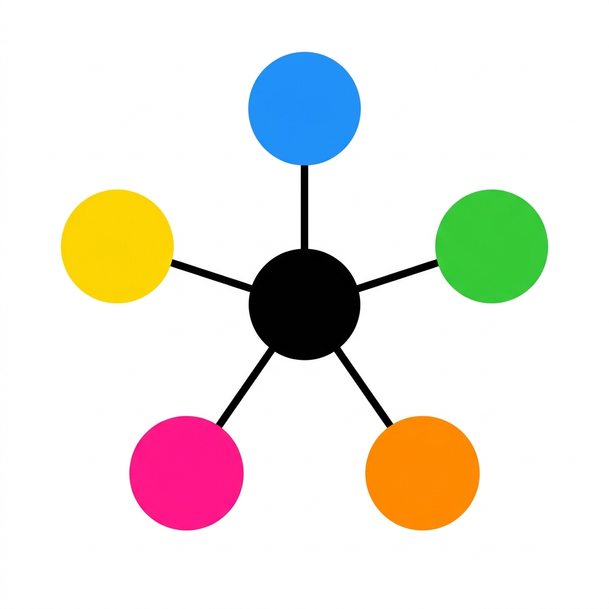
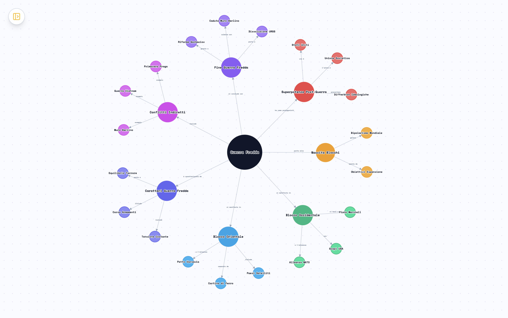
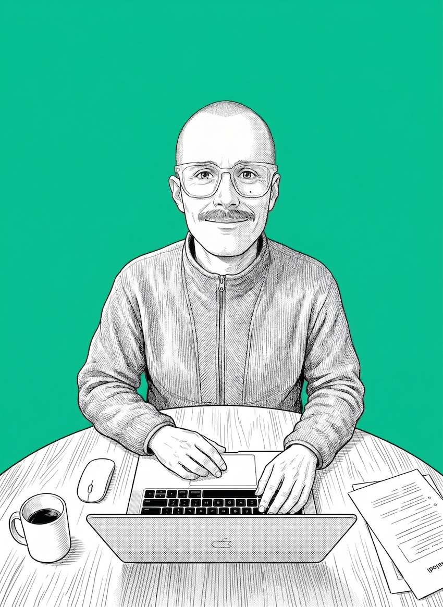
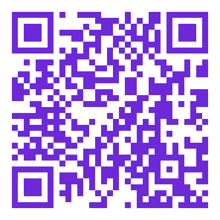

Trasformare la Conoscenza Visuale per la Neurodiversità
per UNA mappa concettuale
a mappa semantica completa
"Progettato per pochi, utile a tutti."
App desktop cross-platform che converte PDF, URL, video YouTube e documenti in mappe mentali e knowledge graph generati da AI — pensata prima di tutto per studenti DSA, BES e neurodivergenti, utile a chiunque studi.
La crisi (invisibile) dell'apprendimento inclusivo
Una popolazione di studenti in crescita, senza strumenti adeguati
| Paese | Studenti DSA/BES/SEN | Trend |
|---|---|---|
| 🇨🇭 Svizzera (HQ) | ~50–80K stimati (4,8%) | misure rafforzate in crescita |
| 🇮🇹 Italia | ~1,2M BES (354K DSA, 6,0%) | +6%/anno |
| 🇫🇷 Francia | ~520K + 308K LPI | +10–11%/anno |
| 🇩🇪 Germania | ~600K Förderbedarf (7,5%) | era 5,3% nel 2000 |
| 🇬🇧 Regno Unito | ~1,77M SEND (20,5%) | DfE Jan 2025 |
Gli insegnanti BES/OPI investono 2–3 ore per creare una singola mappa concettuale manuale — strumento cardine dei Piani Didattici Personalizzati (PDP, Legge 170/2010).
Il vuoto di mercato
Tool generalisti
MindMeister, XMind, Coggle: brainstorming generico. Nessuna semantica profonda, nessun design accessibility-first.
Software compensativi
Algor Education, SuperMappe: mappe statiche/semi-interattive, niente AI generativa da fonti arbitrarie.
MappAI occupa lo spazio vuoto tra i due cluster — ed è l'unico a farlo offline-first e GDPR/nLPD-compliant.
Da qualsiasi fonte a mappa semantica, in 4 step
Interfaccia zero-friction: basta sapere cosa si vuole studiare. Il motore AI multi-fase (Gemini + Infomaniak, GDPR/nLPD) trasforma il contenuto in una struttura di pensiero navigabile.
Carica: PDF, URL, YouTube, DOCX, testo, audio.
Scegli: Mappa Mentale o Knowledge Graph.
Genera: in meno di 2 minuti, mappa semantica pronta per studiare.
L'intelligenza diventa visiva

Output reale di MappAI — Knowledge Graph interattivo generato automaticamente
Motore D3.js: testi → grafi semantici interattivi. L'AI riflette la struttura cognitiva della materia, non la sostituisce.
MindMap: gerarchica
L0 → L5, multi-fase, rami atomici. Ideale per indici e gerarchie visive (DSA/ADHD).
Knowledge Graph: reticolare
Entità + 55+ tipi di relazioni (causa, precede, si oppone a, regola...). Ideale per storia, scienze, pensiero critico.
Accessibilità integrata
Schede Focus, font OpenDyslexic, sillabazione, Text-to-Speech, citazioni verbatim dalle fonti (zero allucinazioni), quiz e flashcard auto-generati.
Risultati validati: MindMap 77 nodi / 0 troncamenti · KG 38 nodi / 47% cross-link · 45 sec da PDF 20 pagine.
Oltre lo schermo: documenti, vault, privacy
Il lavoro digitale diventa materiale reale, stampabile, e di proprietà dello studente — non del fornitore.
Timeline cronologiche
Estrazione automatica di date ed eventi, layout A4 pronto stampa (es. Storia: Guerra Fredda).
Stampa dossier
Esportazione di rami concettuali interi con citazioni integre: un clic = materiale PDF per la scuola e per il PDP.
Vault Markdown / Obsidian
Offline-first, compatibile Obsidian. Zero data lock-in: esporta, modifica, importa.
Privacy by design
Provider EU/CH (Infomaniak, Ginevra), conforme GDPR/nLPD — fondamentale per dati educativi e scuole europee.

Output reale di MappAI — PDF A4 pronto stampa, generato automaticamente
Nessuno fa quello che facciamo noi
| Funzionalità | MappAI | NotebookLM | Algor Education | XMind / MindMeister |
|---|---|---|---|---|
| Generazione AI da PDF/URL/YouTube | ✅ Full | ⚠️ Parziale | ❌ | ❌ |
| Knowledge Graph semantico (55+ rel.) | ✅ | ❌ | ❌ | ❌ |
| Tutor Socratico adattivo | ✅ | ❌ | ❌ | ❌ |
| Quiz & Flashcard auto-generati | ✅ | ❌ | ⚠️ Base | ❌ |
| Vault offline Obsidian-compatible | ✅ | ❌ | ❌ | ❌ |
| Provider GDPR EU (Infomaniak) | ✅ | ❌ | ⚠️ | N/A |
| Design accessibility-first DSA/ADHD | ✅ | ❌ | ✅ | ❌ |
| Multi-piattaforma desktop | ✅ Win/Mac/Linux | Web only | Web only | ✅ |
6 layer di difesa competitiva
AI multi-fase
5 fasi parallele = 0 troncamenti su doc lunghi.
Knowledge Graph
55+ tipi relazioni semantiche, NotebookLM non ce l'ha.
Tutor Socratico
Pedagogia adattiva integrata, non aggiunta dopo.
Privacy EU-first
Infomaniak (CH) + offline-first: accesso a scuole bloccate per tool USA.
A11y-first
OpenDyslexic, TTS, sillabazione. AI tool generalisti non l'hanno.
Vault Obsidian
Zero lock-in: i dati restano dello studente.
Mercato regolamentato, in crescita, sotto-servito
IT, CH, FR, DE — >€220M incl. UK
Canali diretti + PNRR (Italia)
5K → 15K utenti B2C + B2B
| Paese | Studenti DSA/BES/SEN | Trend | Leva regolamentare |
|---|---|---|---|
| 🇮🇹 Italia | ~1,2M BES (354K DSA, 6,0%) | +6%/anno | Legge 170/2010, PNRR, linee guida BES 2025 |
| 🇨🇭 Svizzera (HQ) | ~50–80K stimati | 4,8% misure rafforzate | nLPD, programmi cantonali |
| 🇫🇷 Francia | ~520K + 308K LPI | +10–11%/anno | Piano nazionale digitale BES |
| 🇩🇪 Germania | ~600K Förderbedarf (7,5%) | era 5,3% nel 2000 | Investimenti pubblici per Länder |
"Education AI + Privacy-first (GDPR/nLPD)" apre le porte delle scuole europee, oggi chiuse ai tool cloud USA. Mercato AI-in-education EU: da USD 1,59B (2025) a USD 19,97B (2034), CAGR 32,5%.
Modello di business e roadmap
Pricing (PLG · freemium)
| Tier | Target | Prezzo |
|---|---|---|
| Free | Discovery | 3 mappe/mese |
| Pro Individual | Studenti DSA | €4,99/mese |
| Pro Famiglia | 1 studente + genitori | €7,99/mese |
| Educator | Insegnanti BES/OPI | €9,99/mese |
| School License | Istituti (30 utenti) | €150–500/anno |
| District/Canton | USR, cantoni | Su preventivo |
Costi infrastrutturali quasi nulli (desktop offline-first) → freemium sostenibile fin da subito.
Roadmap & milestone
Canali go-to-market
SEO/content per docenti BES · partnership AID/AIRIPA · PNRR via MEPA (Italia) · referral logopedisti/tutor · Boldbrain & Innosuisse (CH)
Trazione prodotto e utilizzo dei fondi
Metriche prodotto validate
Utilizzo del Seed: CHF 300.000
27%
Sviluppo & security audit
20%
Marketing & acquisizione
13%
Business dev. B2B (MEPA)
27%
Hiring (primo collaboratore)
10%
Operations & infrastruttura
3%
Contingency
Con CHF 600K: raddoppio hiring (2 collaboratori) + marketing budget, accelerazione versione mobile.
Founder-product fit inimitabile

Giacomo Meschini
Founder & Full-Stack Developer
Ticino, Svizzera
Sviluppatore
Electron, D3.js, Python/JS, Cloud (GCP, Infomaniak). Ho costruito MappAI da zero, dall'architettura AI multi-fase al motore di visualizzazione.
Educatore specializzato
Educazione Visiva, Arti Plastiche, materie umanistiche — esperienza diretta con studenti BES/DSA in aula, ogni giorno.
Esperto accessibilità & privacy
Tecnologie assistive per neurodivergenti + competenze GDPR/nLPD — privacy-first già nel DNA del prodotto.
Ticinese
Posizionamento ideale per accedere sia all'ecosistema startup svizzero (Boldbrain, TiVentures, Innosuisse) che a quello italiano.
Un team puramente tech non costruisce il tutor Socratico; un team educativo senza tecnica non costruisce il knowledge graph. Io sono entrambi.
L'investimento
CHF 300'000 – 600'000
Per posizionare MappAI come il riferimento europeo dell'AI educativa DSA-first — prima delle scuole 2026/2027.

Scansiona per scrivermi
Giugno 2026 · MappAI — Trasformare la conoscenza per ogni mente